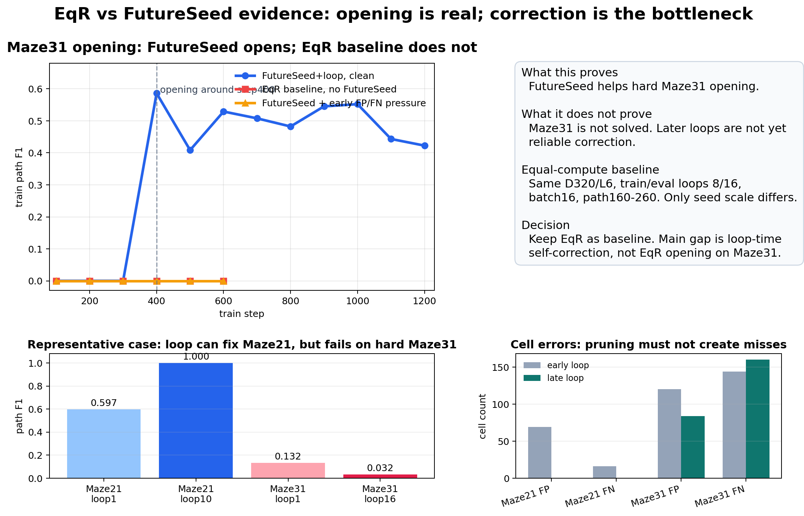
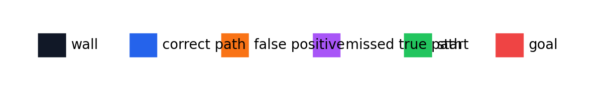
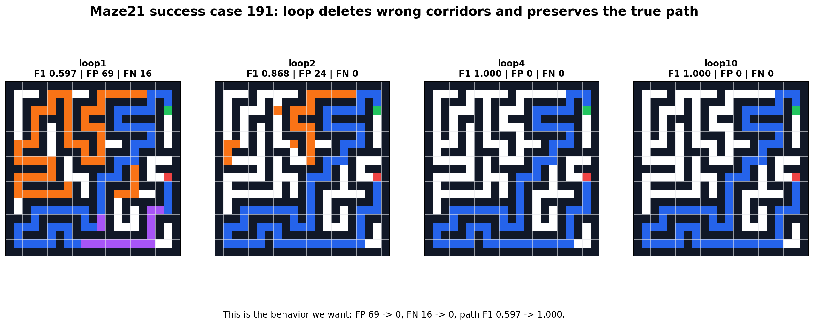
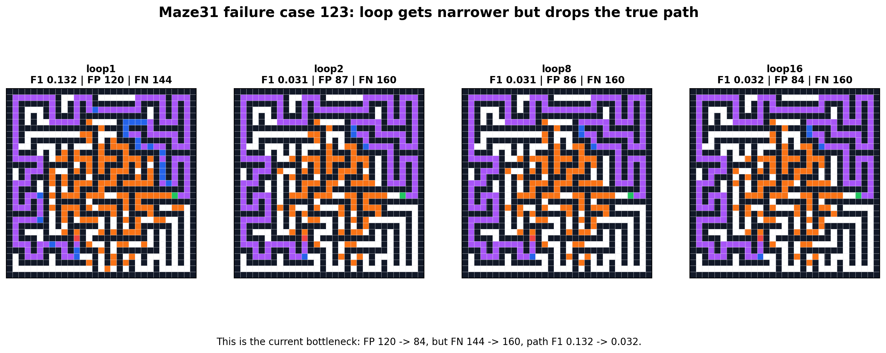
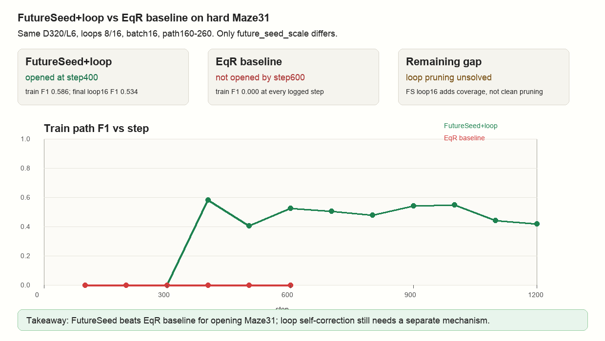
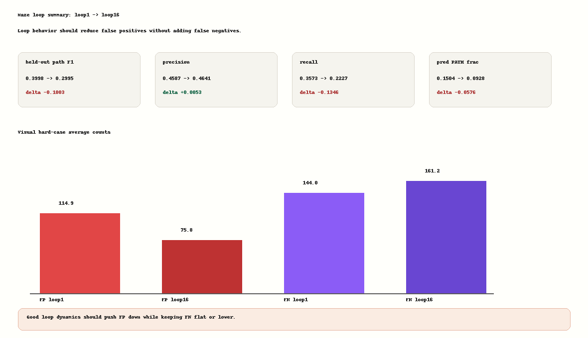

EqR vs FutureSeed Maze Visual Analysis
Bottom line: FutureSeed opens hard Maze31 where equal-compute EqR stays flat, but Maze31 loop correction is not solved. Maze21 shows what success should look like; Maze31 shows the current failure mode.
1. Opening and Decision Boundary

Legend

2. Maze21: Desired Loop Behavior
Loop deletes wrong corridors and preserves the true path.

3. Maze31: Current Failure
Loop narrows the mask, but it drops true-path cells too.

Older Source Figures

